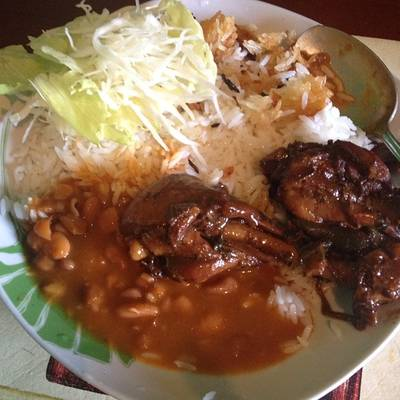

<!DOCTYPE html>
<html lang="es">
   
  <head>
        <meta charset="UTF-8">
       
        <title> </title>


    </head>

    <body>

    </body>
    <h1>Bandera dominicana.</h1>
    
    <h2>Un delicioso plato de la gastronomia dominicana.</h2>
    
    <h3>Ingredientes:</h3>
    <ol>Una taza de arroz.</ol>
    <ol>Carne de pollo.</ol>
    <ol>una taza de habichuelas rojas.</ol>
    <ol>Dos tomate.</ol>
    <ol>Un aguacate.</ol>
    <ol>Repollo.</ol>
    <ol>Lechuga.</ol>
    <ol>Platano verde.</ol>

    <h3> Preparacion:</h3>
    <ol>Haga el arroz.</ol>
    <ol>Guise el pollo.</ol>
    <ol>Prepare la ensalada.</ol>
    <ol>Corte el aguacate en rodajas.</ol>
    <ol>Haga fritos con los platanos.</ol>


        


</html>